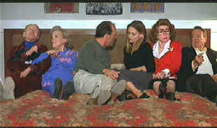

|
Story
of Us,The(SE)/C+,B |
|
Universal/1973/143m/WS
1.85
|
This
is a commendable attempt to tell the story of a marriage in
shorthand, but I think it's intentionally superficial, in a way, and
that's it's failure. Do we ever get a chance to really
sympathize with either character for very long? I think not. Ben
and Katy Jordan's marriage is defined by the little moments, the
ordinary events that make up the daily life of any relationship.
You never get to know much about Ben nor Kathy, the two kids are
there for window dressing, and the attempted pathos fails on
deaf audience, so to speak.
|
 |
| A
family affair. ©Universal |
There are many likeable aspects to The Story of Us. It's
like a complex meal with first class ingredients that after it's
cooked up and mixed together fails to excite the palette. Only
the chef seems delighted with his creation, while the diners
have to smile through the hash.
Reiner and scriptwriters Alan Zweibel
and Jesse Nelson try to make The Story of Us a free-form
experience. They succeed, but it isolates the audience. There is
very little continuity to the story-telling. Some of the quick
editing, which was scripted, is razor sharp. It communicates.
The rapid fire barrage of small incidents that crush people is
very effective, if only we could feel for these
characters. The most memorable scene in the movie involving
both sets of the Jordan parents is quite funny in a cacophonous
way, but it seems like it's from another movie.
Chemistry usually plays a big part in
the success of films like The Story of Us. The funny
thing is, I think there's excellent chemistry between stars
Michelle Pfeiffer and Bruce Willis as Ben and Katie Jordan. The script is so quick and
heavy, a contradiction to be sure, we never have time to enjoy
the moments they might have given us. Both actors seem to be
working too hard, and I seldom believed them as the characters.
Supporting players Rita Wilson and Paul Reiser have their good
moments, but Rob Reiner seems more occupied with his directing
chore.
Eric Clapton's score, featuring an
outstanding theme song, seems to catch the essence of this story
better than the film itself. Clapton finds a balance between the
pain and joy and communicates it through the music; however,
it's an uphill battle to overcome the bitter outcome of almost
every scene,
The audio commentary by Rob Reiner
included in the special edition is a mixed bag. Reiner is more
concerned with delving into story than elaborating on the
filmmaking process. There are repetitions and gaps between his
voice-over. He has some nice insights into the actors, but the
best things gleaned from Reiner are the origins of some of the
nicer bits in The Story of Us. How Reiner connected with
Eric Clapton for the score is interesting.
Far too many scenes are overenhanced creating more noise than
the DVD doctor ordered for The Story of Us. Conversely,
there are a number of scenes which appear too soft. It felt like
the colorist wasn't sure which way to go and the result is an
inconsistent looking DVD. The colors run too hot, tending to add
red to the chromatic mix. They don't exactly bleed, but the sure
look like they want to.
The
by-now-standard Universal Spotlight on Location is fine. The
actors and director commenting on the film are interspersed with
clips from the film. There a
couple of nice trailers for this Spring's big Universal comedy
releases, Klumps, a revisiting of The Nutty Professor,
and The Adventures of Crusader Rabbit, a live/animation
comic adventure.
|
The Feature
Archive has articles ranging from John
Ford to Blonde
Bimbos, The
Heistmasters, Akira
Kurosawa and Frank
Darabont.

Click on the image above to learn more about the effect of
an actor's voice on his screen persona.
Check out the Movie
Poster Archive for
short bios and images of Susan Hayward, Kirk Douglas, Katharine
Hepburn and many more. This month's featured star is Clark
Gable.
Imaging
Science Foundation
The Imaging Science
Foundation promotes proper standards in home theater viewing.
ISF trained technicians offer monitor calibration services to
consumers. The difference in a properly calibrated monitor
can be astounding. Click on the image to find an ISF member near
you.
HOT
LINKS
DVD
Verdict
They may be
judgmental, but that's the point, isn't it. Lots of DVD reviews
plus news and more
The
Home Theater Forum
Looking for lively and
helpful exchanges on home theater, DVD, movies. Visit this
friendly site and get a hardy welcome.
Home
Theater Reference Reviewing System

When you read a DVD review it's of utmost importance to know
what equipment is being used to evaluate quality. Click on the
projector to find out more.
|